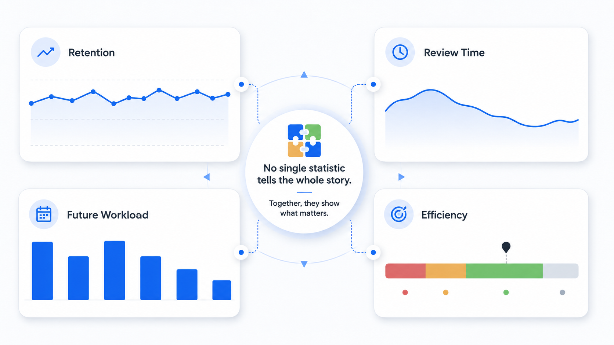

Anki statistics can answer important questions: Is your workload sustainable? Are mature cards being remembered at the level you expect? Are difficult cards consuming too much time? The key is to interpret trends at the right scale and change one cause at a time.
Start with the decision, not the graph
Before opening statistics, name the decision you might make. Examples: reduce new cards, repair difficult prompts, change a focus routine, optimize FSRS parameters, or leave the system alone. Without a decision in mind, it is easy to mistake movement for insight.
The official Anki statistics documentation explicitly warns that a single day is not a good overall indicator. Everyone has better and worse days; longer periods are more useful for changing habits or settings.
Five Anki statistics worth understanding
| Metric | What it answers | Common mistake |
|---|---|---|
| True retention | How often reviewed material was recalled over a period | Judging it from one day |
| Review time | How much time the workload consumes | Optimizing speed before card clarity |
| Again count | How often retrieval failed | Pressing Hard to protect the number |
| Future due / daily load | How much review work is approaching | Adding new cards without checking capacity |
| FSRS stability and difficulty | How the scheduler models memory for cards | Editing parameters manually without a clear reason |

What “true retention” means in Anki
In Anki’s true retention table, a mature card has an interval of at least 21 days. Only the first review of a card on a given day counts: Again is treated as a failure, while Hard, Good, and Easy are treated as a pass. This makes the table different from a simple percentage of all button presses.
Look at monthly data and separate young and mature cards. Young cards are still stabilizing and often behave differently from mature knowledge. A change in deck composition can move the overall percentage even when your study behavior did not change.
Desired retention and FSRS
With FSRS enabled, Anki expects true retention to be close to the desired retention setting over time. Desired retention is the proportion of due cards you aim to recall successfully. The default described in the Anki deck options guide is 90%, which is intended to balance retention and workload.
Higher desired retention produces shorter intervals and more reviews. The workload grows particularly quickly at high settings, so “higher” is not automatically “better.” Learning has a time budget.
Stability, difficulty, and retrievability
- Stability estimates how long it takes recall probability to decline to a defined level.
- Difficulty reflects how readily a card’s interval can grow after reviews.
- Retrievability is the estimated probability that you can recall a card now.
These values are most useful as patterns across cards. A difficult card is not a personal failure; it may contain too much information, weak cues, interference, or material that was never fully understood.
Review time and efficiency
Average seconds per card can reveal friction, but it needs context. A short vocabulary recognition card should be faster than a clinical reasoning prompt. Compare like with like and watch the trend over weeks.
If review time rises, inspect the causes before trying to answer faster:
- Are prompts ambiguous or overloaded?
- Are you reviewing new material that was not understood first?
- Is a particular deck full of long lists or weak distinctions?
- Are sessions happening when attention is consistently low?
- Are reference lookups and AI explanations occurring inside the timed review?
A separate maintenance block can fix cards without turning every review into an editing session. Pair that with an Anki Pomodoro workflow to keep focus blocks clean.
Future due and sustainable workload
The future due graph estimates upcoming reviews, while daily load describes the average contribution of current cards to daily work. These are planning signals, not promises: failed cards, new cards, and changing settings will alter the actual queue.
If the queue is repeatedly larger than the time available, the first lever is often new-card intake. Reducing new cards temporarily protects due reviews and prevents the backlog from growing. Changing retention settings can affect workload too, but it should be done with a clear understanding of the tradeoff.
Diagnose patterns before changing settings
Retention is lower than expected
- Use the answer buttons as intended.
- Optimize FSRS parameters when sufficient review history is available.
- Repair or suspend leeches and ambiguous cards.
- Separate very different material into appropriate presets when useful.
- Check whether fatigue or rushed sessions are driving failures.
Retention is very high, but workload feels excessive
Check whether desired retention is higher than you need, whether cards are overly easy, or whether too many new cards enter the system. Extremely high recall can mean you are reviewing earlier than necessary for your goal.
Daily results swing widely
Do not tune the scheduler around noise. Compare monthly retention, deck composition, study time, and answer habits. A single stressful day, exam week, or unusual deck can distort the daily view.
A monthly Anki statistics review
- Select the collection or a meaningful deck and use a one-month view.
- Compare true retention with your intended target.
- Check review time and daily load for sustainability.
- Identify decks with unusual Again rates or slow cards.
- Open a small sample of those cards and look for a shared design problem.
- Make one change: card repair, new-card limit, focus routine, or FSRS optimization.
- Wait long enough to observe the effect before changing another variable.
Statistics are valuable when they shorten the path from pattern to action. A calm dashboard that combines retention, consistency, accuracy, and time can help — as long as the final decision remains yours.
See more than a review count.
SynapsePro brings retention, consistency, accuracy, efficiency, planning, and focus tools into one Anki workspace.
Get SynapsePro free